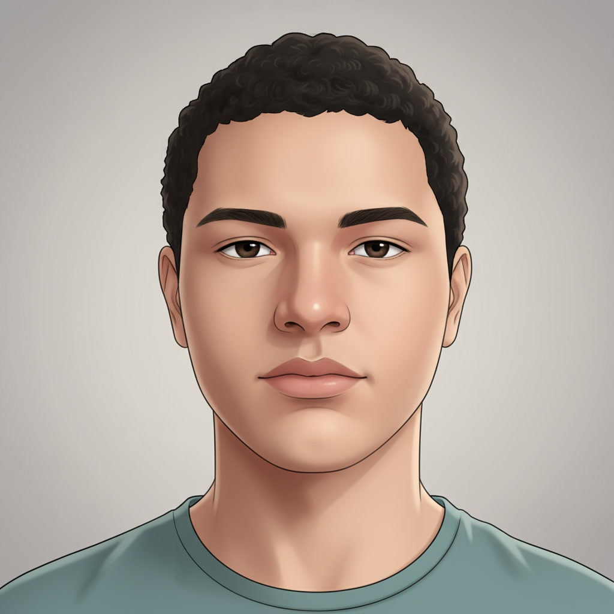
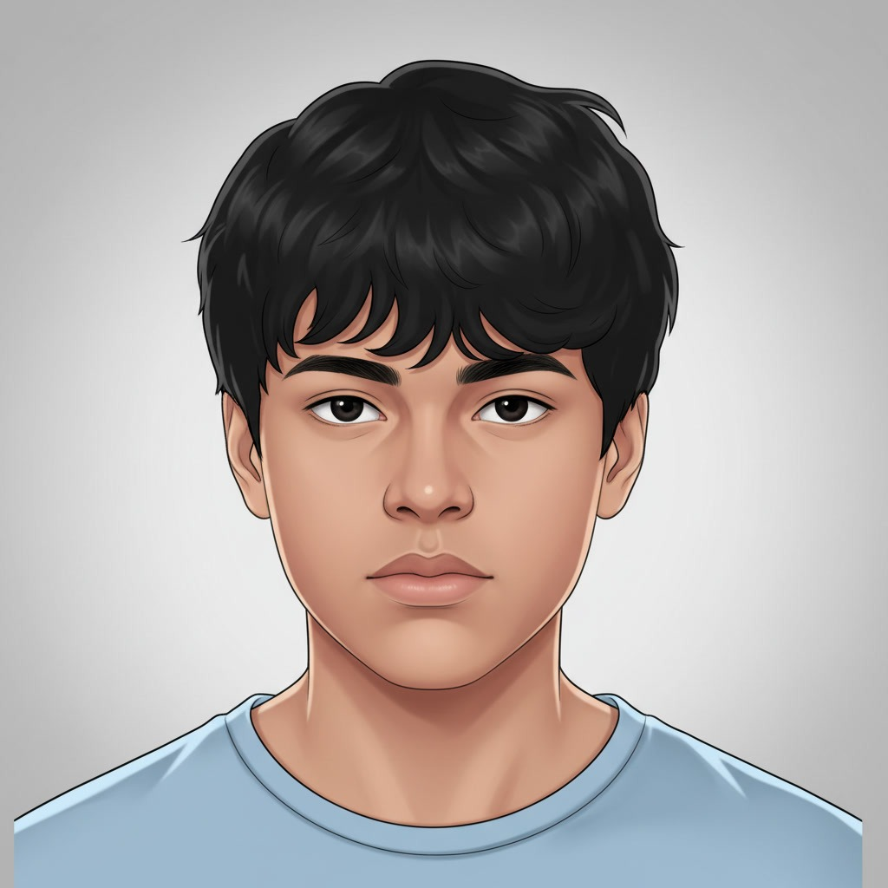

Luís Fábio
Diretor
Técnico de Informática
A Fluxus Coffee surgiu da ideia de unir a paixão pelo café com a tecnologia. A empresa foi criada pensando em pessoas que procuram um lugar confortável para estudar, trabalhar, conversar e aproveitar um bom café, tudo em um ambiente moderno e conectado. Desde sua criação, a Fluxus Coffee busca se diferenciar das cafeterias tradicionais ao oferecer não apenas cafés, doces e lanches, mas também uma experiência voltada à tecnologia. O espaço conta com Wi-Fi, tomadas para dispositivos eletrônicos e um ambiente planejado para estudantes, profissionais e amantes da tecnologia. O nome “Fluxus” representa movimento, conexão e evolução, conceitos que fazem parte da identidade da empresa. Dessa forma, a Fluxus Coffee busca ser mais do que uma cafeteria: um espaço onde café, tecnologia, ideias e pessoas se encontram.
Oferecer cafés, alimentos e um ambiente moderno que promovam momentos de conexão, produtividade e convivência, unindo a experiência de uma cafeteria à praticidade da tecnologia.
Tornar-se uma referência em cafeterias tecnológicas, reconhecida pela qualidade dos produtos, inovação no atendimento e criação de espaços que conectem pessoas, café e tecnologia.
Qualidade, Inovação, Conexão, Sustentabilidade, Respeito, Responsabilidade, Evolução

Diretor
Técnico de Informática

Gerente
Técnico de Informática